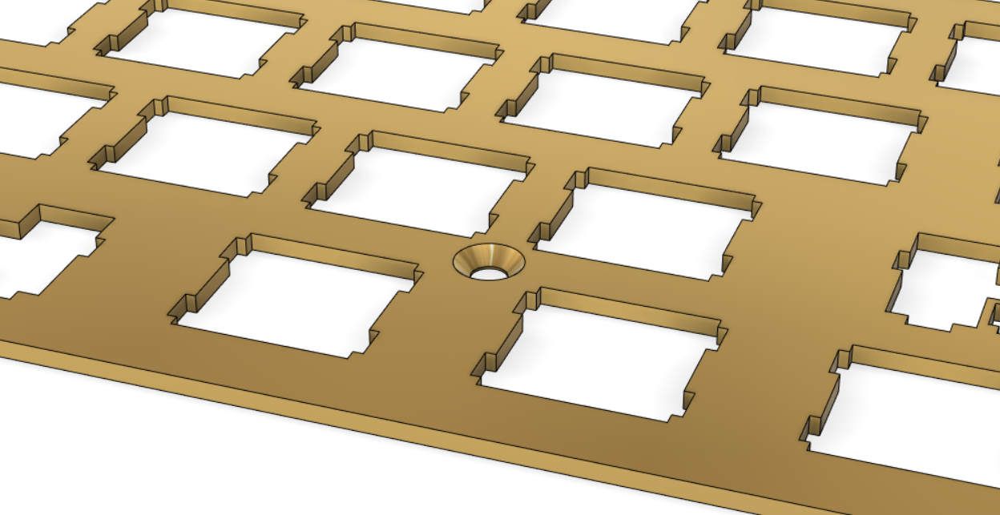

Sam Witte
Custom Mechanical Keyboard
Using KiCAD for schematic design and PCB layout & design, and Fusion 360 for case and hardware design, I designed a 70% mechanical keyboard.
Summary / Table of Contents
This project was a very new beast for me. Making the PCB alone involved schematic design, component layout, and routing traces, all of which I had never touched before this project.

Table of Contents
The PCB
For the PCB, I followed a basic guide explaining how to make a small 2x2 macro-pad that you can find here, and expanded on that to create a custom keyboard.
Schematic
I'm going to be honest here. There wasn't a lot of original work in this part. Most of the schematic was copied from this guide and modified slightly to fit my criteria.
That being said, I did learn how to make a schematic and import footprints into a schematic. I also got to learn a small amount about making efficient component connections in this stage.

PCB Layout
In this area, I could stretch my wings more, so to speak. In this part, I got to lay out all of the components in a way that would be later expressed on the physical board.
To get the correct key spacing on the PCB, I referred to the plate that I made using a combination of keyboard-layout-editor.com, which gave me the physical spacing between keys according to my custom layout, and this Plate & Case Builder. I did not use the case generator functionality of this site.

The Plate
After I generated the plate drawing, I imported the drawing into Fusion 360, where I gave it depth using the extrusion tool. That part took maybe 30 seconds.
Next, I took the dimensions of the case, covered below, and countersunk holes into the plate, as I wanted the screw heads to be flush with the top of the plate. I knew how large to make the countersinks because of an STL file I found on McMaster-Carr.
The Case
Next I designed the case, which surrounds the keyboard. It's the part on the outside that sits directly on the table. I wanted this part to be aesthetically pleasing. Almost a piece of art. Let's not get too ahead of ourselves, though, I'm not super artsy ;)
I gave the case a 7 degree tilt, so it was easier and more pleasant to type on. I also wanted it to be made of anodized aluminum. First because of how it looked, and second because I felt that it needed some heft to it.
Final Thoughts
Throughout this project, I deepened my knowledge and understanding of Fusion 360, PCB schematic design, and PCB layout. I also learned how make an assembly of separate parts in Fusion 360, which I think could be very useful in the future when dealing with larger-scale projects.
Though I couldn't develop a physical version of it due to me being a broke college student, I would love to revisit this project in the future to improve it, and possibly make it a reality for me and perhaps a few interested others.